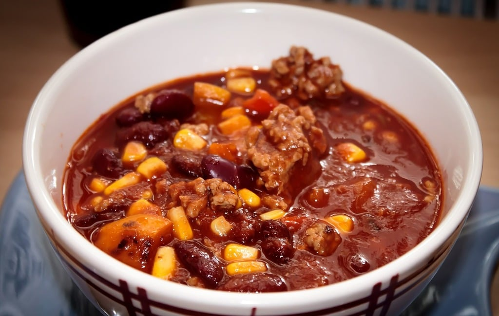

return to home
Chili

Descrpition
A warm bowl of comfort for cool nights. A particular favorite of mine, since it’s
so easy, and if you're in a hurry, it’s quite quick to make. Although, if you have
the time it does benefit from a long stew.
You will have left overs from this recipe, but that's totally fine, because the
rumors that chili is better the second day is absolutely true. Reheating is as
easy as simply popping the amount you'd like to eat in the microwave for 1-2
minutes at a time, stirring before putting the chili back in for more time.
Recipe
Ingredients
- 1-2 lbs ground beef
- 1 can Corn
- 2 cans Beans
- 1-2 onions
- 1 can tomato sauce
- 1-4 tbl chocolate chips
- chili spice
- salt
- pepper
- cayenne
- chipotle powder, or smoked paprika
Instructions
- Start cooking the onions until translucent
- Brown the ground beef in a pan
Do not remove the onions. Let them continue cooking with meat
You may toss the fat that renders out, or you may leave it in the chili
- put your meat and onions into a large pot, and combine with canned ingredients
There is no need to drain the cans prior to putting them in the pot, however is
you desire a thicker chili it okay to do so. I would recomend however, to at
least save the bean water, as it has a ton of flavor, and excess liquid can
always be reduced.
- Let the mixture come to a simmer.
The higher your heat, the more frequently you'll need to stir the pot. Don't set
the temperature too low however, as once the next step is complete, the chili
will need significantly less attention.
- Add spices to taste
Because this is such a large quantity of food, you'll need more spice than you
may be used to using. Adding salt can really wake up the flavors of the other
spices. Cayenne will add heat to the meal. Chipotle powder will add smokiness
and heat. Paprika will just added a little smokiness on it's own. Chili powerder
is the main flavor addition in the spice mix
- Optionally add chocolate
A little bit of chocolate can bring that second day flavor fresh from the pot.
If you add too much and mellow the flavor more than you'd you like, you can
undo the damage by simply adding salt.
- Simmer the pot to let the flavors mellow together
From this point, the chili is done when you say it is. Don't forget to stir
occasionally. If the bottom burns, there is no fixing the taste that it will
impart onto the rest of the pot.
back to home